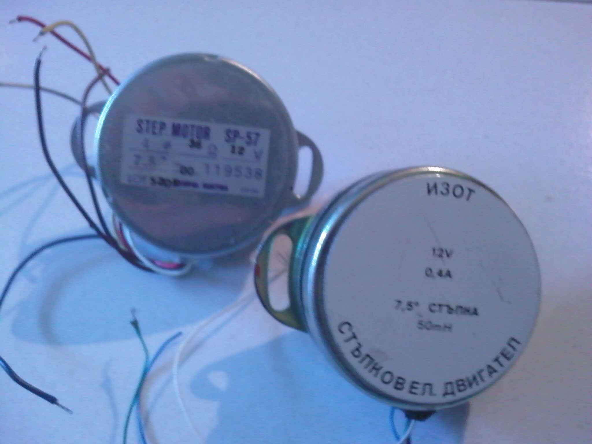

|
|
- Робко 01 е антропоиден робот създаден в
българия от БАН и
произведен в заводите за медицинска техника. Той е създаден по
американски модел името му e Armdroid 1000. Двата робота са
напълно аналогични по функционални възможности, но имат малки
разлики в механиката и основни такива в управлението.
- Управлението на Робко 01 е базирано на ТТЛ логически
елементи, както това на своя отец, с опростена програма на работа. Като
всяка под процесорна система тя си има, както вътрешни
така и външни адреси. Роботът си има определен контролер с
ПРОМ за да може компютърът за който е проектиран да го
разпознае при задаване на слот в който той е поставен.
Този контролер има определена изходна шина на която се свързва
самия робот. На една шина е възможно да се свържат
само два робота сътветно адрес0 и адрес1.
- Дотук с външните адреси. Нека да добавим, че роботът
може да обслужва само по една ос от общо шест оси на свобода.
Главния проблем, е че всеки електродвигател си има
собствен фиксиран адрес и той важи за всички роботи т.е.
те са взаимо заменяеми един с друг. От тук произлиза главния проблем
при изработка на програми включващи повече от една ос.
При извършване на по-сложни движения или използването на повече
от един електромотор се налага така нареченото редуване прави
се анализ на на движението по оси неговото времетраене и се
решава как ще бъдат подавани данни до двигателите.
- В робота съществуват 8 адреса както казах по-горе. Шест от
тях са за двигателите а останалите два са за Входно/Изходните
устройства.
В множеството от такива при проектиране е решено, че
Изходите ще бъдат с отворен колектор като изходите са 8 на
брои разделени на две тетради.
- Входовете не са много различни от изходите, освен, че те
нямат изтеглящи
резистори към U захранващо и при работа с тях е необходимо да се
отстрани електростатиката от оператора работещ с дънната платка.
U захранващо е +5V изцяло ТТЛ. Като за неговата стабилност се
грижи електронен регулатор МА7805 от серията 7800.
Захранването на робота е капризно и е необходимо да се обърне
внимание при неговото свързване.
- Двигателите на робота са стъпкови, синхронни, имат 4 фази,
работят на 12 волта [V], 47 ома [?] и има 0.4 ампера [A] консумация
на намотка (фаза) и са също българско производство. Съществуват два
завода където ги произвеждат, ЗАЕ Пловдив и ИЗОТ,
самия двигател е правен по японски модел на който е със абсолютно
същите параметри и размери. Двигателят е на фирма Copal Elektra.
Единствената разлика е в сечението на оста на ротора на българския е
6.0мм, а на японския е 6.2мм.

Щрaкни върху картинката, за да я видиш
в пълен размер.
- Оригинално техническо описание от завода производител тук.
|

{kind=link}